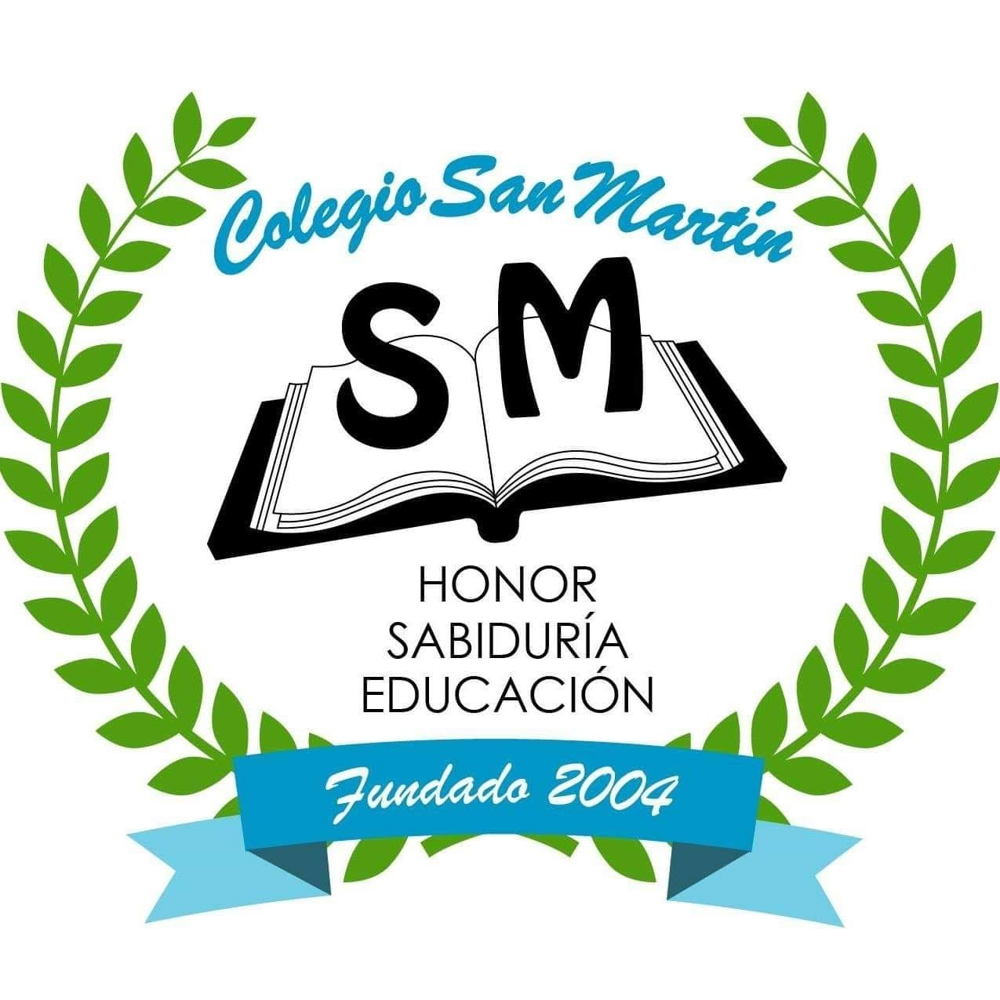
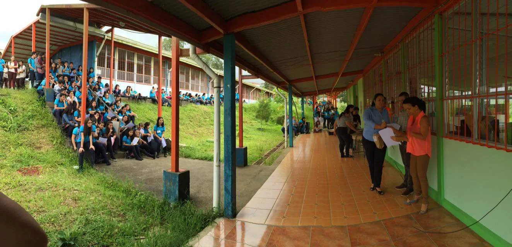
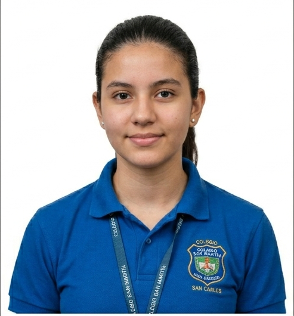

Educación Académica
Programas de enseñanza enfocados en matemáticas, ciencias, idiomas y estudios sociales para preparar a los estudiantes para la educación superior.

Honor - Sabiduria - Educacion

Somos una institución educativa comprometida con la formación integral de nuestros estudiantes, promoviendo la excelencia académica, los valores humanos y el desarrollo tecnológico.
Solicitar informaciónProgramas de enseñanza enfocados en matemáticas, ciencias, idiomas y estudios sociales para preparar a los estudiantes para la educación superior.
Los estudiantes desarrollan habilidades en programación, herramientas digitales y uso responsable de la tecnología.
Fomentamos el desarrollo físico y artístico mediante equipos deportivos, música, danza y actividades culturales.

"Gracias al Colegio San Martín he desarrollado habilidades académicas y personales que me preparan para mi futuro."
"La formación en valores y la calidad educativa hacen de esta institución una excelente elección."
Si desea más información sobre matrículas o programas educativos, complete el siguiente formulario.